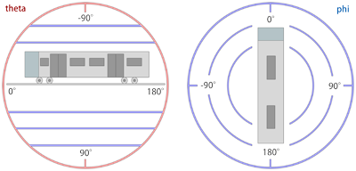
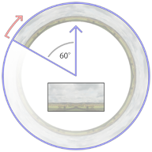
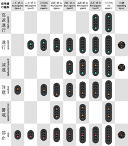
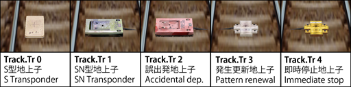

| Route.LoadingScreen Image.png |
|
Image.png: A path to a supported image file. |
| Route.StartTime Time |
|
Time: The time at which the simulation is to start. |
Note: If this is not set or is invalid, the simulation will start at the arrival time set at the first station.
| Route.DynamicLight Dynamic.XML |
|
Dynamic.XML: A path to a Dynamic Lighting definition XML file. |
It allows the lighting to be varied using a time-based model, and is described fully on the following page:
| Route.AmbientLight RedValue; GreenValue; BlueValue |
|
RedValue: An integer ranging from 0 to 255 representing the red component of the ambient light. The default value is 160. GreenValue: An integer ranging from 0 to 255 representing the green component of the ambient light. The default value is 160. BlueValue: An integer ranging from 0 to 255 representing the blue component of the ambient light. The default value is 160. |
| Route.DirectionalLight RedValue; GreenValue; BlueValue |
|
RedValue: An integer ranging from 0 to 255 representing the red component of the directional light. The default value is 160. GreenValue: An integer ranging from 0 to 255 representing the green component of the directional light. The default value is 160. BlueValue: An integer ranging from 0 to 255 representing the blue component of the directional light. The default value is 160. |
| Route.LightDirection Theta; Phi |
|
Theta: A floating-point number representing the angle in degrees which controls the pitch of the light direction. The default value is 60. Phi: A floating-point number representing the angle in degrees which controls the planar rotation of the light direction. The default value is about -26.57. |

| Converting a spherical direction (theta,phi) into a cartesian direction (x,y,z): | |
| ƒ |
x = cos(theta) * sin(phi) y = -sin(theta) z = cos(theta) * cos(phi) |
| Converting a cartesian direction (x,y,z) into a spherical direction (theta,phi) for y²≠1: | |
| ƒ |
theta = -arctan(y/sqrt(x2+z2)) phi = arctan(z,x) |
| Converting a cartesian direction (x,y,z) into a spherical direction (theta,phi) for y²=1: | |
| ƒ |
theta = -y * pi/2 phi = 0 |
| Route.InitialViewpoint Value |
|
Value: An integer defining the initial camera viewpoint mode. The following values are valid: 0 : The camera will be placed in the cab. (Default) 1 : The camera will be placed in 'Track Camera' mode. 2 : The camera will be placed in 'Flyby Camera' mode. 3 : The camera will be placed in 'Flyby Zooming Camera' mode. |
| Route.DeveloperID |
| This command is ignored by openBVE. |
| Train.Folder FolderName Train.File FolderName |
| FolderName: The folder name of the default train to use on this route. |
| Train.Run(RailTypeIndex).Set RunSoundIndex Train.Rail(RailTypeIndex).Set RunSoundIndex |
|
RailTypeIndex: A non-negative integer representing the rail type as defined via Structure.Rail and used via Track.RailType. RunSoundIndex: A non-negative integer representing the train's run sound to associate to the rail type. |
| Train.Flange(RailTypeIndex).Set FlangeSoundIndex |
|
RailTypeIndex: A non-negative integer representing the rail type as defined via Structure.Rail and used via Track.RailType. RunSoundIndex: A non-negative integer representing the train's flange sound to associate to the rail type. |
| Train.Timetable(TimetableIndex).Day.Load FileName |
|
TimetableIndex: A non-negative integer representing the timetable index. FileName: The file name for the daytime version of the timetable, relative to the train's folder (1st choice), or relative to the Object folder (2nd choice). |
| Train.Timetable(TimetableIndex).Night.Load FileName |
|
TimetableIndex: A non-negative integer representing the timetable index. FileName: The file name for the daytime version of the timetable, relative to the train's folder (1st choice), or relative to the Object folder (2nd choice). |
| Train.Gauge ValueInMillimeters |
| ValueInMillimeters: A floating-point number representing the rail gauge, measured in millimeters (0.001 meters). The default value is 1435. |
| ☀ | Note: |
| Train.Gauge is the same as Route.Gauge. |
| Train.Interval Interval0; Interval1; ...; Intervaln-1 |
| ValueInSeconds: A floating-point number representing the time interval between the player's train and the preceding train, measured in seconds. The default value is 0. |
| Train.Velocity Speed |
| Speed: A positive floating-point number representing the maximum speed the preceding trains may travel at, by default measured in kilometers per hour, or 0 for infinite speed. The default value is 0. |
| Train.Acceleration |
| This command is ignored by openBVE. |
| Train.Station |
| This command is ignored by openBVE. |
The general syntax for commands in the Structure namespace is:
| Structure.Command(StructureIndex).Load FileName |
| Command: | Remarks |
|---|---|
| Ground | Defines objects for Cycle.Ground and Track.Ground. |
| Rail | Defines objects for Track.Rail, Track.RailStart and Track.RailType. |
| WallL | Defines left objects for Track.Wall. |
| WallR | Defines right objects for Track.Wall. |
| DikeL | Defines left objects for Track.Dike. |
| DikeR | Defines right objects for Track.Dike. |
| FormL | Defines left platforms edges for Track.Form. |
| FormR | Defines right platforms edges for Track.Form. |
| FormCL | Defines transformable left platforms for Track.Form. No ANIMATED objects supported. |
| FormCR | Defines transformable right platforms for Track.Form. No ANIMATED objects supported. |
| RoofL | Defines left roof edges for Track.Form. |
| RoofR | Defines right roof edges for Track.Form. |
| RoofCL | Defines transformable left roofs for Track.Form. No ANIMATED objects supported. |
| RoofCR | Defines transformable rigth roofs for Track.Form. No ANIMATED objects supported. |
| CrackL | Defines transformable left objects for Track.Crack. No ANIMATED objects supported. |
| CrackR | Defines transformable right objects for Track.Crack. No ANIMATED objects supported. |
| FreeObj | Defines objects for Track.FreeObj. |
| Beacon | Defines objects for Track.Beacon. |
Generally, supported objects are B3D, CSV, X and ANIMATED. However, the FormCL, FormCR, RoofCL, RoofCR, CrackL and CrackR commands only accept B3D, CSV and X objects.
➟ More information about forms, roofs and cracks...
Additionally, there is the Structure.Pole command, which has a slightly different syntax:
| Structure.Pole(NumberOfAdditionalRails; PoleStructureIndex).Load FileName |
|
NumberOfAdditionalRails: An non-negative integer representing the number of additional rails covered by the pole. 0 creates a pole for one rail, 1 for two rails, etc. PoleStructureIndex: A non-negative integer representing the pole structure index. FileName: The object file to load, relative to the Object folder. |
Please note that all objects but the FreeObj are inserted at the beginning of a block and should thus extend from 0 to BlockLength (by default 25m) on the z-axis. For further information on usage, see the respective commands from the Track namespace.

The background image is displayed as a cylindric wall around the camera whose start (viewed from above) is 60 degrees to the left of the initial forward direction (at the 10 o'clock position). From there, the background image wraps clock-wise around the cylinder with a repetition count specified via Texture.Background(BackgroundTextureIndex).X, which by default creats 6 repetitions in a full circle.
The upper 3/4 of the image is displayed above the horizon, while the lower 1/4 is displayed below the horizon. Via Texture.Background(BackgroundTextureIndex).Aspect, you can choose whether to have a fixed cylinder height or to preserve the aspect ratio of the texture. If the image should have a fixed height, the cylinder has a height of 1/2 its radius, which corresponds to about 20 degree inclination to the top of the image, and about -7 degrees to the bottom of the image. If the aspect ratio of the image is preserved, this takes not only the width and height of the image into account, but also the repetition count.
Regardless of the repetition count you chose, you should make sure that the left and right edges of the textures fit seamlessly together. Please also take into account that top and bottom caps are created which sample from the top and bottom 10% of the image. You should avoid mountain peaks and similar extremes in the top 10% of the image in order for such extremes to not leak into the top cap.
The image loaded into Texture.Background(0) is displayed at the beginning of the route, unless a Track.Back command at the beginning of the route requests a different image.
As an alternative Dynamic or Object based backgrounds may be used. The implementation of these is described upon this page:
Dynamic & Object Based Backgrounds
| Texture.Background(BackgroundTextureIndex).Load FileName |
| FileName: The texture file to load, relative to the Object folder. |
NOTE: If a dynamic or object based background is to be used, this must instead point to the appropriate XML file.
| Texture.Background(BackgroundTextureIndex).X RepetitionCount |
| RepetitionCount: The number of times the background image is repeated in a full circle. The default value is 6. |
NOTE: Ignored if using a dynamic or object based background.
| Texture.Background(BackgroundTextureIndex).Aspect Mode |
| Mode: The mode of aspect ratio handling to use. The default value is 0. |
| ▸ Options for Mode: |
|
0: Use a fixed height for the cylinder. 1: Preserve the aspect ratio of the image. |
NOTE: Ignored if using a dynamic or object based background.
| Cycle.Ground(GroundStructureIndex).Params GroundStructureIndex0; GroundStructureIndex1; GroundStructureIndex2; ...; GroundStructureIndexn-1 |
|
GroundStructureIndex: A non-negative integer indicating the ground structure index for which a cycle is to be defined. GroundStructureIndexi: A non-negative integer indicating a ground structure that has been previously loaded via Structure.Ground. |
| Cycle.Rail(RailStructureIndex).Params RailStructureIndex0; RailStructureIndex1; RailStructureIndex2; ...; RailStructureIndexn-1 |
|
RailStructureIndex: A non-negative integer indicating the rail structure index for which a cycle is to be defined. RailStructureIndexi: A non-negative integer indicating a rail structure that has been previously loaded via Structure.Rail. |
Consider the following definition:
| ▶ |
With Structure .Ground(0) grass.csv .Ground(1) river.csv .Ground(2) asphalt.csv |
The following two codes will produce the same output:
| ▶ |
With Track 0, .Ground 0 25, .Ground 1 50, .Ground 2 75, .Ground 0 100, .Ground 1 125, .Ground 2 ; and so on... |
| ▶ |
With Cycle .Ground(0) 0; 1; 2 With Track 0, .Ground 0 |
| Signal(SignalIndex).Load AnimatedObjectFile |
|
SignalIndex: A non-negative integer representing the signal index. AnimatedObjectFile: A reference to an animated object file, relative to the Object folder. |
| Signal(SignalIndex).Load SignalFileWithoutExtension; GlowFileWithoutExtension |
|
SignalIndex: A non-negative integer representing the signal index. SignalFileWithoutExtension: A reference to a B3D/CSV/X object file representing the signal, relative to the Object folder, but without the file extension. Is required to be specified. GlowFileWithoutExtension: An optional reference to a B3D/CSV/X object file representing the distance glow, relative to the Object folder, but without the file extension. |
For the SignalFileWithoutExtension, there should be the following files present (example):
SignalFileWithoutExtension.x
SignalFileWithoutExtension0.bmp
SignalFileWithoutExtension1.bmp
SignalFileWithoutExtension2.bmp
SignalFileWithoutExtensionn.bmp
The aspect indices from 0 through n represent successively more permissive aspects, where 0 is red. The built-in signals, for example, use the indices 0 (●), 1 (●●), 2 (●), 3 (●●), 4 (●) and 5 (●●). You can use as many as required.
All faces in the object will be applied the currently active aspect texture. This means that you cannot use any other texture in the object, but still have to assign texture coordinates appropriately. For the glow object, the above rules also apply. The glow object is usually a rectangle placed clearly in front of the signal, although you can also use different shapes.
The glow textures deserve special attention. All glow textures are pre-processed in the following way:
| A | B | C | D | E | F |
|---|---|---|---|---|---|
The texture you start with should have a sharp shape, usually oval. The shape should be fully saturated in the core and blend into pure white at its outer rim. The surroundings of the shape can be either pure black (A) or pure white (B).
When openBVE loads the glow texture, it will replace all purely black pixels with purely white pixels, thus arriving at (B). From there, the image is inverted (C), then hue-shifted by 180 degrees (D). Compared to (B), this has the overall effect of inverting the lightness of the image, i.e. fully saturated pixels will be left unchanged (e.g. the core), while bright pixels (such as the outer rim of the shape) will become dark, and vice versa. Then, the image is gamma-corrected to further darken the dark parts (E), and finally, the image is blurred slightly (F).
The resulting texture is always additively blended. This means that instead of directly drawing the texture onto the screen, the pixels of the texture are added to the screen pixels. Here, adding black (0) does not change the screen pixels, while adding a fully satured color channel (1) will result in a fully satured color channel, e.g. adding white produces white. Keep in mind that when designing the textures, you will have to follow the inverse rules, e.g. design the image as depicted in (A) or (B), while having in mind how it will be processed afterward.
| ⓘ Use of track positions |
| All commands from the Track namespace need to be associated to track positions. Once a track position has been defined, all subsequent commands are associated to this track position until a new track position is defined. If you do not explicitly state a track position before the first command of the Track namespace is used, 0 will be assumed. While you do not need to use track positions in ascending order, series of commands which are associated the same track position will be sorted into ascending order once the file is loaded. While track positions can be any non-negative floating-point number, many commands in the Track namespace are only to be applied at the beginning of a block, which is 25m by default. For the default situation, this means that some commands are only to be used at track positions 0, 25, 50, 75, 100, 125 and so on. All commands for which this restriction applies are marked as such. |
| Track.RailStart RailIndex; X; Y; RailType |
|
RailIndex: A positive integer (>=1) indicating which rail index to use. X: A floating-point number representing the horizontal distance from the player's rail, by default measured in meters. Negative values indicate left, positive ones right. Y: A floating-point number representing the vertical distance from the player's rail, by default measured in meters. Negative values indicate below, positive ones above. RailType: A non-negative integer referencing the rail type to use as defined by either a Structure.Rail or a Structure.Cycle command. |
| ⚠ | This command can only be used at the beginning of a block. |
| Track.Rail RailIndex; X; Y; RailType |
|
RailIndex: A positive integer (>=1) indicating which rail index to use. X: A floating-point number representing the horizontal distance from the player's rail, by default measured in meters. Negative values indicate left, positive ones right. Y: A floating-point number representing the vertical distance from the player's rail, by default measured in meters. Negative values indicate below, positive ones above. RailType: A non-negative integer referencing the rail type to use as defined by either a Structure.Rail or a Structure.Cycle command. |
| ⚠ | This command can only be used at the beginning of a block. |
| ⓘ Track.RailStart vs. Track.Rail |
| If you want to start a new rail, you can either use Track.RailStart or Track.Rail. When using Track.RailStart, you provide markup that a new rail is in fact to be started, which is invalid if the rail already exists. Using an explicit Track.RailStart will protect you from using a RailIndex which is already in use, in which case an error message is generated. |
| Track.RailType RailIndex; RailType |
|
RailIndex: A non-negative integer indicating which rail index to change. The player's rail can be referred to with index 0. The default value is 0. RailType: A non-negative integer referencing the rail type to use as defined by either a Structure.Rail or a Structure.Cycle command. The default value is 0. |
| ⚠ | This command can only be used at the beginning of a block. |
| Track.RailEnd RailIndex; X; Y |
|
RailIndex: A positive integer (>=1) indicating which rail index to use. X: A floating-point number representing the horizontal distance from the player's rail, by default measured in meters. Negative values indicate left, positive ones right. Y: A floating-point number representing the vertical distance from the player's rail, by default measured in meters. Negative values indicate below, positive ones above. |
| ⚠ | This command can only be used at the beginning of a block. |
| Example of Track.RailStart, Track.Rail, Track.RailType and Track.RailEnd commands | |
| ▶ |
With Track 1000, .RailStart 1; 3.8; 0.0; 0 1025, .RailType 1; 1 1050, .Rail 1; 1.9; 0.0; 0 1075, .RailEnd 1 |
| Track.Accuracy Value |
| Value: A non-negative floating-point number representing the accuracy of the track. The default value is 2. |
| Track.Adhesion Rate |
| Rate: A non-negative floating-point number measured in percent representing the adhesion of the track. The default value is 100. |
| Track.Pitch Rate |
| Rate: A floating-point number measured in per thousands representing the pitch of the track. The default value is 0. |
| Rate expressed through X and Y: | |
| ƒ | Rate = 1000 * Y / X |
| ⚠ | This command can only be used at the beginning of a block. |
| Track.Curve Radius; CantInMillimeters |
|
Radius: A floating-point number representing the radius of the curve, by default measured in meters. The default value is 0. CantInMillimeters: A floating-point number which represents the superelevation of a banked curve, always measured in millimeters (0.001 meters). The default value is 0. See also Options.CantBehavior. |
| ⚠ | This command can only be used at the beginning of a block. |
| Track.Turn Ratio |
| Rate: A floating-point number representing a turn. The default value is 0. |
| ƒ | Ratio = X / Z |
| ⚠ | This command can only be used at the beginning of a block. |
| ⚠ | This command is deprecated - use Track.Curve instead. |
| Track.Height Y |
| Y: A floating-point number representing the height of the player's rail, by default measured in meters. |
| Example of a Track.Height command interpolated at 25m boundaries: | |
| ▶ |
1000, Track.Height 1 1075, Track.Height 4 |
| Example of Track.Height explicitly set each 25m to produce the same result: | |
| ▶ |
1000, Track.Height 1 1025, Track.Height 2 1050, Track.Height 3 1075, Track.Height 4 |
| ⚠ | This command can only be used at the beginning of a block. |
| Track.FreeObj RailIndex; FreeObjStructureIndex; X; Y; Yaw; Pitch; Roll |
|
RailIndex: A non-negative integer representing the rail on which to place the object. The default value is 0. FreeObjStructureIndex: A non-negative integer representing the object to place as defined via Structure.FreeObj. The default value is 0. X: The x-offset from the (straight) rail, by default measured in meters. Negative values represent the left, positive ones the right. The default value is 0. Y: The y-offset from the (straight) rail, by default measured in meters. Negative values represent below the top of the rails, positive ones above. The default value is 0. Yaw: The angle in degrees by which the object is rotated in the XZ-plane in clock-wise order when viewed from above. The default value is 0. Pitch: The angle in degrees by which the object is rotated in the YZ-plane in clock-wise order when viewed from the left. The default value is 0. Roll: The angle in degrees by which the object is rotated in the XY-plane in clock-wise order when viewed from behind. The default value is 0. |
| Track.Wall RailIndex; Direction; WallStructureIndex |
|
RailIndex: A non-negative integer representing the rail on which to start or update the wall. The default value is 0. Direction: An integer indicating which wall to use as described below. WallStructureIndex: A non-negative integer representing the object to place as defined via Structure.WallL and Structure.WallR. The default value is 0. |
| ▸ Options for Direction: |
|
-1: The WallL object (left wall) is used. 0: Both the WallL and WallR objects are used. 1: The WallR object (right wall) is used. |
| ⚠ | This command can only be used at the beginning of a block. |
| Track.WallEnd RailIndex |
| RailIndex: A non-negative integer representing the rail on which to end an existing wall. |
| ⚠ | This command can only be used at the beginning of a block. |
| Track.Dike RailIndex; Direction; DikeStructureIndex |
|
RailIndex: A non-negative integer representing the rail on which to start or update the dike. The default value is 0. Direction: An integer indicating which dike to use as described below. DikeStructureIndex: A non-negative integer representing the object to place as defined via Structure.DikeL and Structure.DikeR. The default value is 0. |
| ▸ Options for Direction: |
|
-1: The DikeL object (left dike) is used. 0: Both the DikeL and DikeR objects are used. 1: The DikeR object (right dike) is used. |
| ⚠ | This command can only be used at the beginning of a block. |
| Track.DikeEnd RailIndex |
| RailIndex: A non-negative integer representing the rail on which to end an existing dike. |
| ⚠ | This command can only be used at the beginning of a block. |
| Track.Pole RailIndex; NumberOfAdditionalRails; Location; Interval; PoleStructureIndex |
|
RailIndex: A non-negative integer representing the rail on which to start or update the pole. The default value is 0. NumberOfAdditionalRails: A non-negative integer representing the amount of additional rails covered by this pole (i.e. this rail, plus NumberOfAdditionalRails rails). The default value is 0. Location: If NumberOfAdditionalRails is 0, the side on which the pole is placed (see below), or the x-offset in multiples of 3.8 meters if NumberOfAdditionalRails is at least 1. The default value is 0. Interval: An integer multiple of the block length specifying the interval in which poles are placed. PoleStructureIndex: A non-negative integer representing the object to place as defined via Structure.Pole. The default value is 0. |
| ⚠ | This command can only be used at the beginning of a block. |
| Track.PoleEnd RailIndex |
| RailIndex: A non-negative integer representing the rail on which to end an existing pole. |
| ⚠ | This command can only be used at the beginning of a block. |
| Track.Crack RailIndex1; RailIndex2; CrackStructureIndex |
 Description not available yet. Description not available yet.
|
| Track.Ground CycleIndex |
| CycleIndex: A non-negative integer representing the cycle of ground objects to place as defined via Structure.Ground or Cycle.Ground. |
| ⚠ | This command can only be used at the beginning of a block. |
| Track.Sta Name; ArrivalTime; DepartureTime; PassAlarm; Doors; ForcedRedSignal; System; ArrivalSound; StopDuration; PassengerRatio; DepartureSound; TimetableIndex; ReopenDoor; ReopenStationLimit; InterferenceInDoor; MaxInterferingObjectRate |
|
Name: The name of the station. This is displayed in the timetable and in messages, so should not be omitted. ArrivalTime: The time the player's train is expected to arrive at this station. Special values may also appear - see below. DepartureTime: The time the player's train is expected to depart from this station. Special values may also appear - see below. PassAlarm: Indicates whether the pass alarm device should remind the driver of stopping at this station. The default value is 0. Doors: Indicates which doors should open at this station. The default value is 0. ForcedRedSignal: Indicates whether the signal behind the last station stop should be red on a train approach. The default value is 0. System: Indicates which built-in safety system should apply until the next station. The default value is 0. ArrivalSound: The sound file to be played on arrival, relative to the Sound folder. StopDuration: A positive floating-point number indicating the minimum stop duration in seconds, including door opening/closing times. The default value is 15. PassengerRatio: A non-negative floating-point number indicating the relative amount of passengers in the train from this station on. As a reference, 100 represents a train with normal amount of passengers, while 250 represents an over-crowded train. Values in-between 0 and 250 should be used. The default value is 100. DepartureSound: The sound file to be played before departure (departure time minus sound duration minus door closing time), relative to the Sound folder. TimetableIndex: A non-negative integer representing the timetable to be shown from this station on as defined via Train.Timetable(TimetableIndex). ReopenDoor[%]: Door reopen / close occur probabilities. A non-negative floating-point number. The default value is 0. ReopenStationLimit: Door reopen / close action maximum happening count. A non-negative integer number. The default value is 5. InterferenceInDoor[s]: A non-negative floating-point number indicating the duration of interference in the door. The default value is random value from 0 to 30. MaxInterferingObjectRate[%]: A positive integer less than 100 indicating the upper limit of ratio [%] of door catching. The default value is random value from 1 to 99. |
| ▸ Available options for ArrivalTime: |
|
time: The train is expected to arrive at this particular time. omitted: The train may arrive at any time. P or L: All trains are expected to pass this station. B: The player's train is expected to pass this station, while all other trains are expected to stop. S: The player's train is expected to stop at this station, while all other trains are expected to pass. S:time: The player's train is expected to arrive at this particular time, while all other trains are expected to pass. |
| ▸ Available options for DepartureTime: |
|
time: The train is expected to depart at this particular time. omitted: The train may depart at any time. T or =: This is the terminal station. If ForcedRedSignal is set to 1, the departure signal will be held at red indefinately. T:time: This is the terminal station. If ForcedRedSignal is set to 1, the departure signal will still switch to green before the specified time as if this was a regular station. C: This is a station at which to "change ends". See the description below. C:time: This is a station at which to "change ends". Changing ends will take place at the specified time unless StopDuration interferes. See the description below. |
| ▸ Available options for PassAlarm: |
|
0: The pass alarm device does not remind the driver of stopping at this station. 1: The pass alarm device reminds the driver of stopping at this station. |
| ▸ Available options for Doors: |
|
L or -1: The left doors are expected to open at this station. N or 0: No doors are expected to open at this station, i.e. the train should simply come to a hold. R or 1: The right doors are expected to open at this station. B: Both the left and right doors are expected to open at this station. |
| ▸ Available options for ForcedRedSignal: |
|
0: Signals are unaffected by this station. 1: The signal immediately following the last station stop is hold at red until the train reaches the stopping area and the departure time. |
| ▸ Available options for System: |
|
ATS or 0: ATS should be used from this station on. The following track is not be equipped with ATC. ATC or 1: ATC should be used from this station on. The following track is equipped with ATC. |
Stations can be marked as "changing ends" in the departure time. At such stations, when the departure time has been reached, the train will automatically jump to the next station. This feature is intended to fake a reverse of traveling direction without the need to jump to stations manually from the menu.
| ⚠ | The "changing ends" feature is only available in the development release 1.2.11 and above. |
| Track.Station Name; ArrivalTime; DepartureTime; ForcedRedSignal; System; DepartureSound |
|
Name: The name of the station. This is displayed in the timetable and in messages, so should not be omitted. ArrivalTime: The time the player's train is expected to arrive at this station. Special values may also appear - see below. DepartureTime: The time the player's train is expected to depart from this station. Special values may also appear - see below. ForcedRedSignal: Indicates whether the signal behind the last station stop should be red on a train approach. The default value is 0. System: Indicates which built-in safety system should apply until the next station. The default value is 0. DepartureSound: The sound file to be played before departure (departure time minus sound duration minus door closing time), relative to the Sound folder. |
| ▸ Available options for ArrivalTime: |
|
time: The train is expected to arrive at this particular time. omitted: The train may arrive at any time. P or L: All trains are expected to pass this station. B: The player's train is expected to pass this station, while all other trains are expected to stop. S: The player's train is expected to stop at this station, while all other trains are expected to pass. S:time: The player's train is expected to arrive at this particular time, while all other trains are expected to pass. |
| ▸ Available options for DepartureTime: |
|
time: The train is expected to depart at this particular time. omitted: The train may depart at any time. T or =: This is the terminal station. If ForcedRedSignal is set to 1, the departure signal will be held at red indefinately. T:time: This is the terminal station. If ForcedRedSignal is set to 1, the departure signal will still switch to green before the specified time as if this was a regular station. C: This is a station at which to "change ends". See the description below. C:time: This is a station at which to "change ends". Changing ends will take place at the specified departure unless StopDuration interferes. |
| ▸ Available options for ForcedRedSignal: |
|
0: Signals are unaffected by this station. 1: The signal immediately following the last station stop is hold at red until the train reaches the stopping area and the departure time. |
| ▸ Available options for System: |
|
ATS or 0: ATS should be used from this station on. The following track is not be equipped with ATC. ATC or 1: ATC should be used from this station on. The following track is equipped with ATC. |
| PassAlarm | 0 (not used) |
| Doors | B (both doors must be opened) |
| ArrivalSound | Not played |
| StopDuration | 15 |
| PassengerRatio | 100 |
| TimetableIndex | Not affected |
The command should be placed at the beginning of the station platform. In order to finalize the creation of a station, use the Track.Stop command to place stop points following this command. All following Track.Stop commands will be associated to this station. At least one Track.Stop command must follow if trains are expected to stop at this station.
Stations can be marked as "changing ends" in the departure time. At such stations, when the departure time has been reached, the train will automatically jump to the next station. This feature is intended to fake a reverse of traveling direction without the need to jump to stations manually from the menu.
| ⚠ | The "changing ends" feature is only available in the development release 1.2.11 and above. |
| Track.StationXML FileName.xml |
A Track.StationXML command, linking to a single XML file is also supported.
This command may be used as an alternative to the Track.Sta and Track.Station commands.
These are fully described on the the The XML Station Format page...
| Track.Stop Direction; BackwardTolerance; ForwardTolerance; Cars |
|
Direction: On which side to place a default stop post. The default value is 0. BackwardTolerance: A positive floating-point number indicating the allowed tolerance in the backward direction, by default measured in meters. The default value is 5. ForwardTolerance: A positive floating-point number indicating the allowed tolerance in the forward direction, by default measured in meters. The default value is 5. Cars: A non-negative integer indicating for how many cars this stop point applies, or 0 for all cars. The default value is 0. |
| ▸ Available options for Direction: |
|
-1: A stop post is created on the left side. 0: No stop post is created. 1: A stop post is created on the right side. |
| Example of a station with multiple stop points: | |
| ▶ |
With Track 0100, .Sta STATION 0178, .Stop 1;;;4 ,; for 4 or less cars 0212, .Stop 1;;;6 ,; for 5 or 6 cars 0246, .Stop 1;;;8 ,; for 7 or 8 cars 0280, .Stop 1;;;0 ,; for 9 or more cars |
| Track.Form RailIndex1; RailIndex2; RoofStructureIndex; FormStructureIndex |
|
Description not available yet.
|
| Track.Limit Speed; Post; Cource |
|
Speed: A positive floating-point number representing the speed, by default measured in km/h, or 0 to indicate no speed restriction. The default value is 0. Post: The side on which to place a default Japanese-style speed limit post. The default value is 0. Cource: The directional indication. The default value is 0. |
| ▸ Options for Post: |
|
-1: The post is placed on the left side of the track. 0: No post will be placed. 1: The post is placed on the right side of the track. |
| ▸ Options for Cource: |
|
-1: The post applies for a left-bound track. 0: The post does not indicate a particular direction. 1: The post applies for a right-bound track. |
| Track.Section a0; a1; a2; ...; an |
| ai: A non-negative number specifying one of the section's aspects. |
| ⓘ Default versus simplified section behavior |
| There are two different modes of behavior on how to interpret the ai parameters. The mode can be set via Options.SectionBehavior. The following are separate descriptions for default and simplified behavior. |
Default behavior:
The ai terms specify the aspect the section should bear depending on how many sections ahead are clear until a red one is encountered. The order of the terms is relevant. The same aspect may occur multiple times.
| ▸ Meanings of the ai terms: |
|
a0: The aspect to show when this section is occupied by a train or otherwise hold at red. a1: The aspect to show when this section is clear, but the immediately following section is red. a2: The aspect to show when this section and the following section are clear, but the one immediately following the latter one is red. an: The aspect to show when n sections are clear before a red one is encountered. |
Simplified behavior:
The ai terms specify the repertoire of aspects the section can have. A section will bear the smallest of the ai which is greater than the current aspect of the upcoming section. If no such ai exists, the section will bear the aspect of an. The order of the ai is irrelevant. If the same aspect occurs multiple times, this has no effect.
| Example of a Track.Section command in conjunction with a Track.SigF command: | |
| ▶ |
With Track 1000, .Section 0;2;4, .SigF 3;0;-3;-1 |
| Track.SigF SignalIndex; Section; X; Y; Yaw; Pitch; Roll |
|
SignalIndex: A non-negative integer representing the signal to be placed as defined via Signal(SignalIndex).Load. Section: A non-negative integer representing the section this signal is attached to, with 0 being the current section, 1 the upcoming section, 2 the section after that, and so on. X: The X-coordinate to place the signal object, by default measured in meters. The default value is 0. Y: The Y-coordinate to place the signal object, by default measured in meters. The default value is 0. Yaw: The angle in degrees by which the object is rotated in the XZ-plane in clock-wise order when viewed from above. The default value is 0. Pitch: The angle in degrees by which the object is rotated in the YZ-plane in clock-wise order when viewed from the left. The default value is 0. Roll: The angle in degrees by which the object is rotated in the XY-plane in clock-wise order when viewed from behind. The default value is 0. |
If no object has been defined by Signal(SignalIndex), one of the default Japanese signals is used:
| ▸ Default signals for SignalIndex: |
|
3: A three-aspect signal having aspects ●red, ●yellow and ●green. 4: A four-aspect (type A) signal having aspects ●red, ●●yellow-yellow, ●yellow and ●green. 5: A five-aspect (type A) signal having aspects ●red, ●●yellow-yellow, ●yellow, ●●yellow-green and ●green. 6: A repeating signal equivalent to that created by Track.Relay. |
| Track.Signal Aspects; Unused; X; Y; Yaw; Pitch; Roll Track.Sig Aspects; Unused; X; Y; Yaw; Pitch; Roll |
|
Type: The number of aspects for this signal. The default value is -2. Unused: This argument is not used by openBVE. X: The X-coordinate to place the signal object, by default measured in meters. The default value is 0. Y: The Y-coordinate to place the signal object, by default measured in meters. The default value is 0. Yaw: The angle in degrees by which the object is rotated in the XZ-plane in clock-wise order when viewed from above. The default value is 0. Pitch: The angle in degrees by which the object is rotated in the YZ-plane in clock-wise order when viewed from the left. The default value is 0. Roll: The angle in degrees by which the object is rotated in the XY-plane in clock-wise order when viewed from behind. The default value is 0. |
| ▸ Options for Type: |
|
 2: A two-aspect (type A) signal having aspects ●red and ●yellow. -2: A two-aspect (type B) signal having aspects ●red and ●green. 3: A three-aspect signal having aspects ●red, ●yellow and ●green. 4: A four-aspect (type A) signal having aspects ●red, ●●yellow-yellow, ●yellow and ●green. -4: A four-aspect (type B) signal having aspects ●red, ●yellow, ●●yellow-green and ●green. 5: A five-aspect (type A) signal having aspects ●red, ●●yellow-yellow, ●yellow, ●●yellow-green and ●green. -5: A five-aspect (type B) signal having aspects ●red, ●yellow, ●●yellow-green, ●green and ●●green-green. 6: A six-aspect signal having aspects ●red, ●●yellow-yellow, ●yellow, ●●yellow-green, ●green and ●●green-green. |
{kind=link}
| Example of a four-aspect type B signal without a post at x=-3 and y=5: | |
| ▶ | 1000, Track.Signal -4;;-3;5 |
| Example of a four-aspect type B signal including a post at x=-3 and y=4.8: | |
| ▶ | 1000, Track.Signal -4;;-3;-1 |
| Track.Relay X; Y; Yaw; Pitch; Roll |
|
X: The X-coordinate at which to place the object, by default measured in meters. The default value is 0. Y: The Y-coordinate at which to place the object, by default measured in meters. The default value is 0. Yaw: The angle in degrees by which the object is rotated in the XZ-plane in clock-wise order when viewed from above. The default value is 0. Pitch: The angle in degrees by which the object is rotated in the YZ-plane in clock-wise order when viewed from the left. The default value is 0. Roll: The angle in degrees by which the object is rotated in the XY-plane in clock-wise order when viewed from behind. The default value is 0. |
| Track.Beacon Type; BeaconStructureIndex; Section; Data; X; Y; Yaw; Pitch; Roll |
|
Type: A non-negative integer representing the type of the beacon to be transmitted to the train. BeaconStructureIndex: A non-negative integer representing the object to be placed as defined via Structure.Beacon, or -1 to not place any object. Section: An integer representing the section to which the beacon is attached, namely 0 for the current section, 1 for the upcoming section, 2 for the section behind that, etc., or -1 for the next red section. Data: An integer representing arbitrary data specific to the beacon type to be transmitted to the train. X: The X-coordinate at which to place the object, by default measured in meters. The default value is 0. Y: The Y-coordinate at which to place the object, by default measured in meters. The default value is 0. Yaw: The angle in degrees by which the object is rotated in the XZ-plane in clock-wise order when viewed from above. The default value is 0. Pitch: The angle in degrees by which the object is rotated in the YZ-plane in clock-wise order when viewed from the left. The default value is 0. Roll: The angle in degrees by which the object is rotated in the XY-plane in clock-wise order when viewed from behind. The default value is 0. |
It should be noted that the built-in safety systems also receive data from these beacons as Track.Beacon(Type) is roughly equivalent to Track.Transponder(Type). Please see the page about beacon standards for more information.
| Track.Transponder Type; Signal; SwitchSystem; X; Y; Yaw; Pitch; Roll Track.Tr Type; Signal; SwitchSystem; X; Y; Yaw; Pitch; Roll |
|
Type: The type of the transponder. The default value is 0. Signal: The signal this transponder references. The default value is 0. SwitchSystem: Whether to automatically switch the safety system. The default value is 0. X: The X-coordinate at which to place the object, by default measured in meters. The default value is 0. Y: The Y-coordinate at which to place the object, by default measured in meters. The default value is 0. Yaw: The angle in degrees by which the object is rotated in the XZ-plane in clock-wise order when viewed from above. The default value is 0. Pitch: The angle in degrees by which the object is rotated in the YZ-plane in clock-wise order when viewed from the left. The default value is 0. Roll: The angle in degrees by which the object is rotated in the XY-plane in clock-wise order when viewed from behind. The default value is 0. |
| ▸ Options for Type: |
|
 0: An S-type transponder used by ATS-S. Usually placed 600m in front of a signal. 1: An SN-type transponder used by ATS-SN. Usually placed 20m in front of a signal. 2: An accidental departure transponder. Usually placed shortly behind a station stop. 3: An ATS-P pattern renewal transponder. Usually placed 600m, 280m, 180m, 130m, 85m or 50m in front of a signal, depending on the circumstances. 4: An ATS-P immediate stop transponder. Usually placed either 25m or 30m in front of a signal, depending on the circumstances. |
| ▸ Options for Signal: |
|
0: The upcoming signal is referenced. 1: The signal immediately behind the upcoming signal is referenced. n: The n'th signal behind the upcoming signal is referenced. |
| ▸ Options for SwitchSystem: |
|
-1: The transponder does not switch the train between ATS-SN and ATS-P. 0: The transponder automatically switches the train to ATS-SN for transponder types 0 and 1, and to ATS-P for types 3 and 4. |
This command places a transponder, usually for the built-in safety systems ATS-SN or ATS-P. For more information about these systems and their transponders, see the user's documentation about ATS.
It should be noted that custom safety system plugins also receive data from these transponders as Track.Transponder(Type) is roughly equivalent to Track.Beacon(Type). Please see the page about beacon standards for more information.
➟ Go here to find out more about ATS-SN and ATS-P.
➟ There is a tutorial available for the proper use of ATS-SN and ATS-P in route files, including all of the five transponders.
| Track.AtsSn |
| Track.AtsP |
| Track.Pattern Type; Speed |
|
Type: The type of speed restriction. Speed: A non-negative floating-point number representing the speed restriction, by default measured in km/h. |
| ▸ Options for Type: |
|
0: A temporary speed restriction. 1: A permanent speed restriction. |
A temporary speed restriction (Type=0) is to be inserted at the point where the speed restriction should apply. ATS-P will know about this speed restriction in advance and will brake the train so that the train meets the speed restriction at that point. Once the point is passed, the speed restriction no longer applies.
A permanent speed restriction (Type=1) is to be inserted at the point where the speed restriction should apply, however, ATS-P does not know about this limit in advance and will only brake the train from that point on. For a higher degree of realism, insert permanent speed restrictions at the same point as ATS-P transponders. A permanent speed restriction, as the name suggests, is remembered by ATS-P and is only released by a subsequent permanent speed restriction.
| Track.PLimit Speed |
| Speed: A positive floating-point number representing the permanent speed restriction for ATS-P, by default measured in km/h. |
| Track.Back BackgroundTextureIndex |
| BackgroundTextureIndex: A non-negative integer representing the background image to be displayed as defined via Texture.Background(BackgroundTextureIndex). |
| ⚠ | This command can only be used at the beginning of a block. |
| Track.Fog StartingDistance; EndingDistance; RedValue; GreenValue; BlueValue |
|
StartingDistance: A floating-point number indicating the start of fog, by default measured in meters. The default value is 0. EndingDistance: A floating-point number indicating the end of fog, by default measured in meters. The default value is 0. RedValue: An integer ranging from 0 to 255 representing the red component of the fog. The default value is 128. GreenValue: An integer ranging from 0 to 255 representing the green component of the fog. The default value is 128. BlueValue: An integer ranging from 0 to 255 representing the blue component of the fog. The default value is 128. |
Fog affects the coloring of objects. Objects before the starting distance appear as-is, objects after the ending distance appear in the fog color, and objects in-between blend linearly between those. The background image is affected by fog as well. For the fog calculations, the background image is assumed to be at 600 meters distance from the camera, regardless of the actual viewing distance.
Depending on Options.FogBehavior, there are two options how this command affects fog from this point on. In block-wise mode, the current fog blends from the beginning of this block to the new settings at the end of this block. The new setting is kept for following blocks. This is the default behavior. In interpolation mode, each Track.Fog command defines a control point for fog, where all of the settings (distances and colors) are interpolated linearly between the control points.
| ⚠ | This command can only be used at the beginning of a block. |
| Track.Brightness Value |
| Value: A non-negative integer within the range from 0 to 255. The default value is 255. |
| Example: | |
| ▶ |
With Track 1200, .Brightness 255 ,; before the bridge starts 1205, .Brightness 128 ,; directly under the bridge here 1210, .Brightness 255 ,; as soon as the bridge ends |
| Track.Marker FileName; Distance |
|
FileName: The file name for the marker image, relative to the Object folder. Distance: A non-zero floating-point number indicating the length for which the marker image is displayed, by default measured in meters. |
| ▸ Behavior for Distance: |
|
negative value: The marker image starts to display at the Track.Marker command, and ends -Distance meters after the Track.Marker command. positive value: The marker image starts to display Distance meters before the Track.Marker command, and ends at the Track.Marker command. |
| Track.Marker FileName.xml |
A Track.Marker command, linking to a single XML file is also supported.
These allow more control over markers than is available in the routefile commands.
These are fully described on the the XML Markers page...
| Track.TextMarker Text; Distance; FontColor |
|
Text: The marker text to display. (No special characters supported). Distance: A non-zero floating-point number indicating the length for which the text is displayed, by default measured in meters. FontColor: The font color for this marker text |
| ▸ Behavior for Distance: |
|
negative value: The marker image starts to display at the Track.Marker command, and ends -Distance meters after the Track.Marker command. positive value: The marker image starts to display Distance meters before the Track.Marker command, and ends at the Track.Marker command. |
|
1: Black. 2: Gray. 3: White. 4: Red. 5: Orange. 6: Green. 7: Blue. 8: Magenta. |
| Track.PointOfInterest RailIndex; X; Y; Yaw; Pitch; Roll; Text Track.POI RailIndex; X; Y; Yaw; Pitch; Roll; Text |
|
RailIndex: A non-negative integer representing the rail for the point of interest. X: A floating-point number representing the horizontal offset from the rail, by default measured in meters. Negative values indicate left, positive ones right. Y: A floating-point number representing the vertical offset from the rail, by default measured in meters. Negative values indicate below, positive ones above. Yaw: The angle in degrees by which the view is rotated in the XZ-plane in clock-wise order when viewed from above. The default value is 0. Pitch: The angle in degrees by which the view is rotated in the YZ-plane in clock-wise order when viewed from the left. The default value is 0. Roll: The angle in degrees by which the view is rotated in the XY-plane in clock-wise order when viewed from behind. The default value is 0. Text: A textual representation of the point of interest. |
| Track.PreTrain Time |
| Time: The time at which the pretrain is at this track position. |
| Track.Announce FileName; Speed |
|
FileName: The file name for the sound to play, relative to the Sound folder. Speed: The reference speed in km/h for speed-dependant sounds, or 0 to play the sound speed-independently. The default value is 0. |
| Track.Doppler FileName; X; Y |
|
FileName: The file name for the sound to play, relative to the Sound folder. X: A floating-point number representing the horizontal offset from rail 0, by default measured in meters. Negative values indicate left, positive ones right. Y: A floating-point number representing the vertical offset from rail 0, by default measured in meters. Negative values indicate below, positive ones above. |
| Track.Buffer |
| Track.Destination Type; BeaconStructureIndex; NextDestination; PreviousDestination; TriggerOnce; X; Y; Yaw; Pitch; Roll |
|
Type: Defines the types of trains for which this destination setter applies: -1 for AI trains only, 0 for all trains and 1 for the player train only. BeaconStructureIndex: A non-negative integer representing the object to be placed as defined via Structure.Beacon, or -1 to not place any object. NextDestination: An integer representing the destination value set when passing over this beacon in a forwards direction, or -1 to disable. PreviousDestination: An integer representing the destination value set when passing over this beacon in a reverse direction, or -1 to disable. TriggerOnce: If set to 0, this beacon will be triggered by all valid trains which pass over it. If set to 1, it will be triggered by the first valid train only. X: The X-coordinate at which to place the object, by default measured in meters. The default value is 0. Y: The Y-coordinate at which to place the object, by default measured in meters. The default value is 0. Yaw: The angle in degrees by which the object is rotated in the XZ-plane in clock-wise order when viewed from above. The default value is 0. Pitch: The angle in degrees by which the object is rotated in the YZ-plane in clock-wise order when viewed from the left. The default value is 0. Roll: The angle in degrees by which the object is rotated in the XY-plane in clock-wise order when viewed from behind. The default value is 0. |